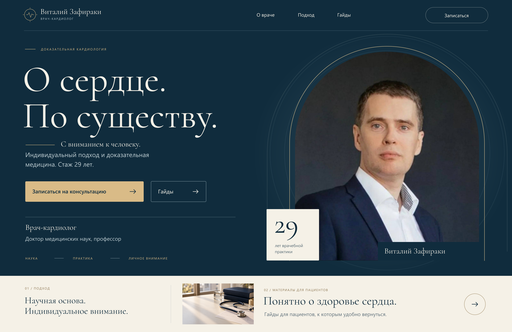
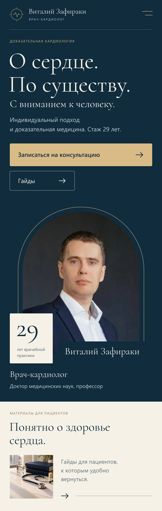
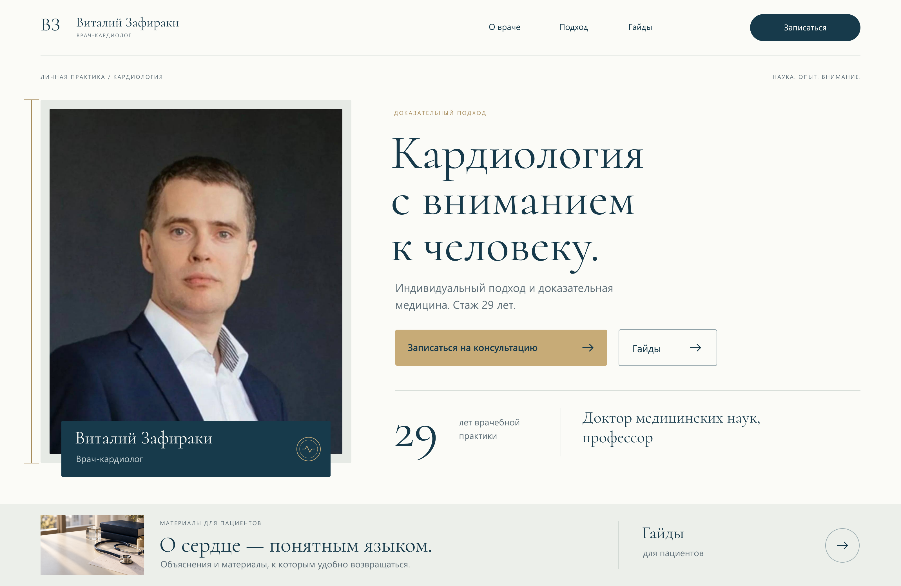
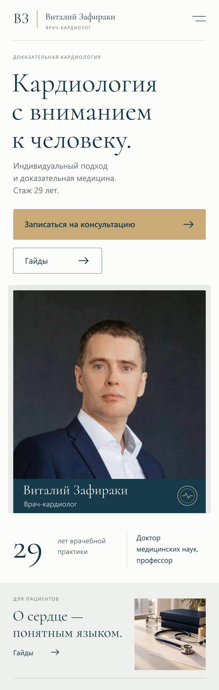
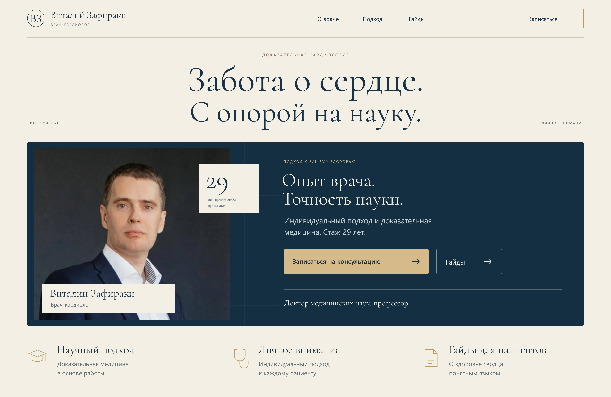
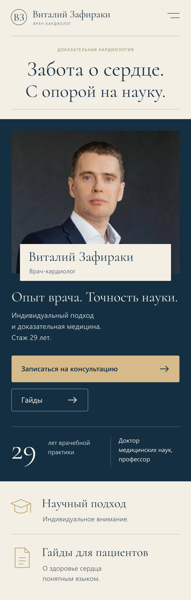

Кардиолог — концепции первого экранаДизайн-кейс · ПортфолиоКардиолог — концепции первого экрана
Визуальные концепции главного блока с отдельной мобильной композицией.
Это просмотр макетов. Кнопки и формы внутри изображений не отправляют заявки. Изображения открываются в исходном размере через контекстное меню браузера.
01. В центре внимания

Компьютерная версия
Мобильная версия02. Ясность и доверие

Компьютерная версия
Мобильная версия03. Академическая панорама

Компьютерная версия
Мобильная версия